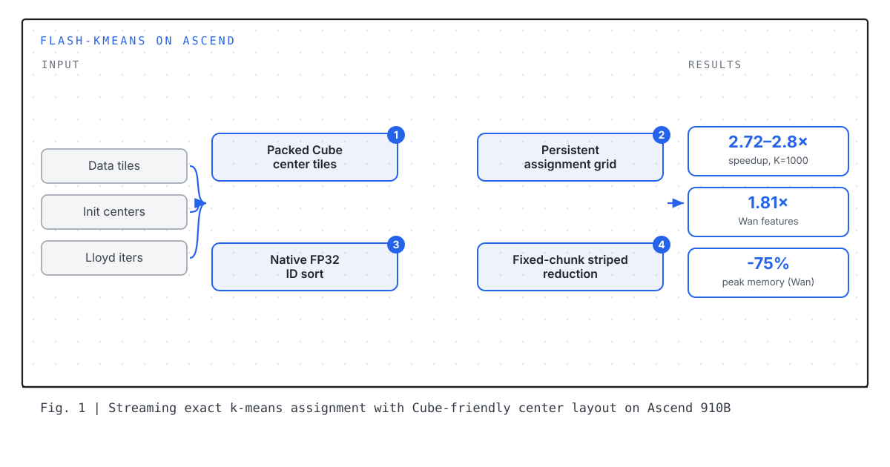

PROJECT 01
Streaming Flash-KMeans: Exact Batched Lloyd Clustering on Ascend NPUs
An Ascend 910B execution path for Flash-KMeans that runs complete Lloyd iterations 2.72–2.80× faster than tuned PyTorch at the video-example scale while using 56.8% less memory.
- Ascend backend for Flash-KMeans: streaming Cube distance assignment plus sorted fixed-chunk FP32 center updates, preserving upstream Lloyd semantics (upstream draft PR #26).
- Five complete Lloyd iterations at 32×75,600×128 with 1,000 centers on one Ascend 910B2C, compared against an independently tuned blocked PyTorch FP16 baseline.
- Padded Cube center tiles, a persistent token-streaming grid, and native FP32 ID sorting give 2.72–2.80× speedup; real Wan2.1 features reach 1.81× with 75% lower peak memory.